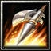

信房的出身是正統甲斐武將，父親是甲斐武士遠江守信 保，其後由於武田家譜代家臣馬場虎貞向信玄的父親信虎諫言，故入籍馬場家，因而改名為馬場信春。 1546年更以「旗本組侍大將持有騎馬五十騎」的獎勵受到拔擢，同時受信玄之命改名信房。第四次川中島之戰，信房擔任妻女山攻擊機動隊，率一百二十騎重創 越後上杉軍，勇名大噪，另外在武田信玄重擊德川家康的三方原之戰中，信房與山縣昌景、內藤昌豊擔任頭陣，對家康軍瘋狂追擊，功績第一。1564年武田名將 「鬼美濃」原虎胤死後，信玄命信房繼承鬼美濃的武名，並受封美濃守信房。 力量型近戰英雄
肉博戰：Ａ
法術 ：Ｂ 輔助 ：Ｃ 最擅長追擊，反攻，肉盾 力量：28+2.70（主要） 敏捷：25+2.10 智 慧：27+2.00 
Ｗ[主動] 波動三連斬
往前方800距離一直線上快速的連斬三次發出波動，
每個波動都 可造成[100/140/180/220]點傷害。 消耗法力[140/180/220/260]，等待時間20秒 Ｅ[主動] 殺意
暈眩目標1秒。目標生命值50%以下時，能增加自身[30/40/50/60]%攻擊力、攻擊及移動速度，持續10秒。 消耗法力[110/120/140/160]，等待時間20秒  增加900範圍友軍裝甲[5/10/15/20]點。 增加[22/33/44]點力量值。生命低於[1600/1800/2000]點時增加[110/160/250]點攻擊力與[50/70/100]點裝甲。 |